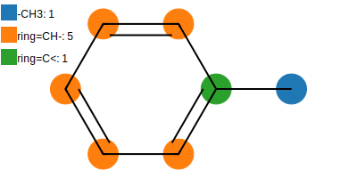

Properties estimators

Some group contribution models could be used to predict properties of pure substances.
Joback model
The Joback model is a well known model to estimate properties of pure substances. We can use it independently of the Groups class by doing:
[1]:
try:
import google.colab
IN_COLAB = True
except:
IN_COLAB = False
if IN_COLAB:
%pip install ugropy
[2]:
from ugropy import joback
toluene = joback.get_groups("toluene")
[3]:
toluene.draw(width=400)
[3]:

[4]:
print(toluene.critical_pressure, " bar")
print(toluene.critical_volume, " cm^3/mol")
print(toluene.critical_temperature, " K")
print(toluene.acentric_factor)
print(toluene.fusion_temperature, " K")
41.144119209325225 bar
319.5 cm^3/mol
598.0611700010388 K
0.25208296412216535
195.07 K
[5]:
print(toluene.vapor_pressure(110 + 273.15), " bar")
0.923433500943906 bar
[6]:
print(toluene.viscosity_liquid(25 + 273.15), " [N/s/m^2]")
0.0004848511681835698 [N/s/m^2]
[7]:
print(toluene.heat_capacity_liquid(50 + 273.15), " [J/mol/K]")
174.140191226778 [J/mol/K]
You can check the full documentation and check all the properties you can estimate by doing:
[8]:
?toluene
Joback model allows the user to provide the experimental normal boiling temperature of the subtance to increase the accuracy of some properties estimations. This value will be used instead of the Joback estimated normal boiling temperature to calculate some properties, for example the critical temperature.
[9]:
toluene = joback.get_groups("toluene", normal_boiling_point=(110.6 + 273.15))
[10]:
print(toluene.critical_temperature, " K")
593.8980798775972 K
[11]:
print(toluene.vapor_pressure(110.6 + 273.15), " bar")
1.0132500000000007 bar